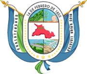

- Extensión territorial: 131.80 km²
- Idioma: Español
- Tradiciones: danzas tradicionales es la de los indios calvareños.
- Alcalde: José Rigoberto Mejía Menjivar.
- Poblacion: 29,271 hab.
- Fiestas patronales: Del 10 al 18 de febrero, fiestas patronales
- Productos artesanales: Artesanias
- Sitios turísticos: 1.El Pital
2.La Palma Chalatenango
- Mapa
- Santa Ana
- Sonsonate
- Usulutan
- San Miguel
- Morazan
- La Union
- La Libertad
- Chalatenango
- Cuscatlan
- San Salvador
- La Paz
- Cabañas
- San Vicente